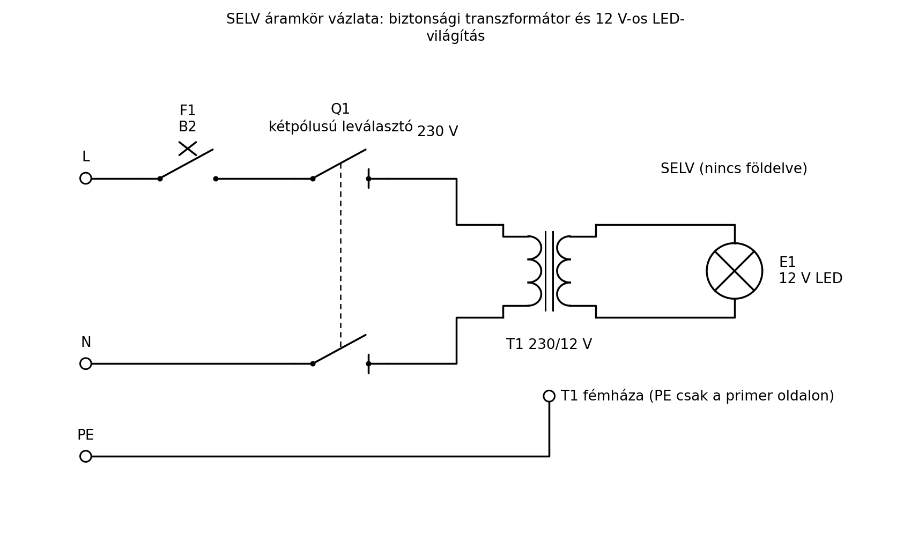
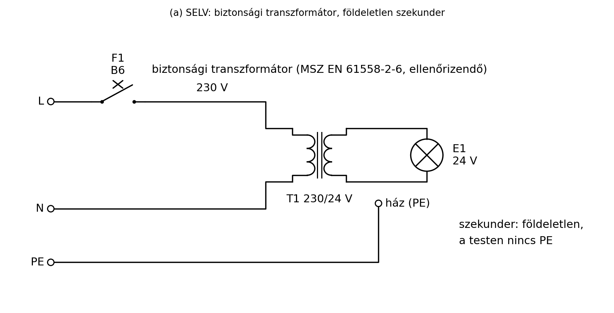
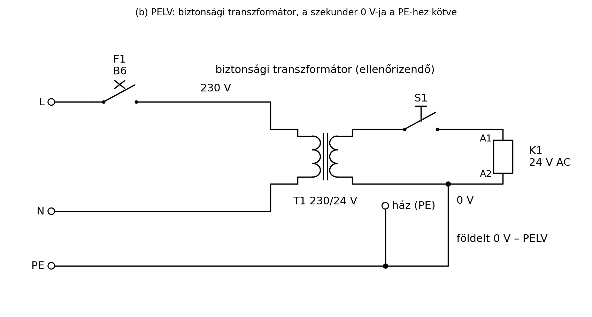
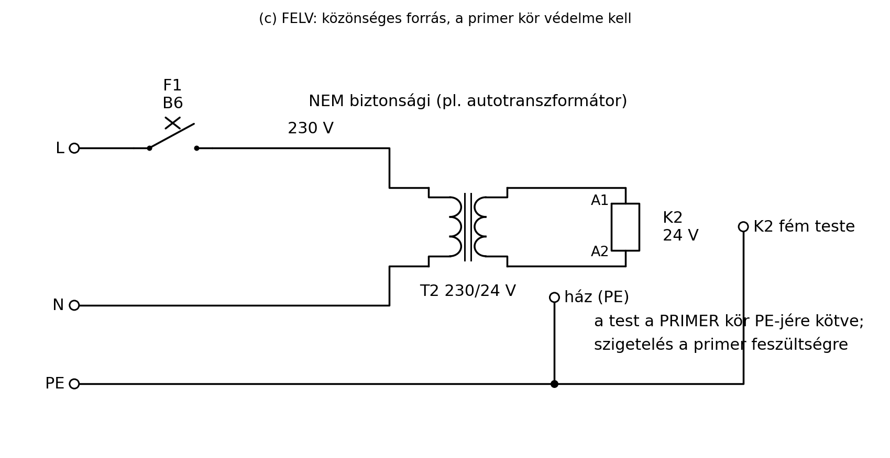
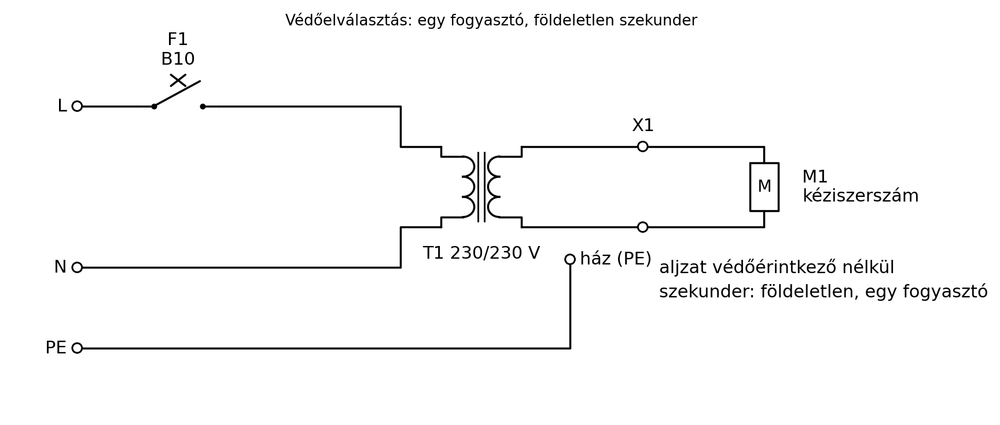
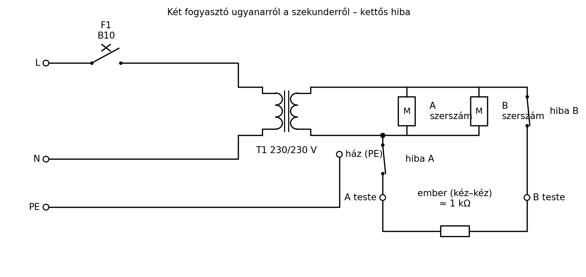

Tegyük fel, hogy egy medence melletti LED-világítást kell bekötnöd, vagy egy építkezésen használt kézi lámpát kell megjavítanod. Itt nem elég a megszokott 230 V-os áramkör: olyan védelmet kell választanod, amely akkor is biztonságos, ha a dolgozó vizes kézzel, szűk helyen, vagy fém állványon dolgozik. Ebben az alfejezetben azokat a védelmi módokat tanuljuk meg, amelyeknél a biztonságot nem elsősorban a gyors lekapcsolás, hanem a feszültség eleve alacsonyan tartása, a kettős szigetelés, vagy a hálózatból való galvanikus elválasztás adja.
Képzelj el egy medence melletti 12 V-os LED-lámpát, amelyet biztonsági transzformátorról (SELV) táplálunk. A transzformátor primer oldala 230 V-ra csatlakozik, a szekunder oldala viszont csak 12 V vagy 24 V feszültséget ad, és galvanikusan el van választva a hálózattól. Ha a dolgozó megfogja a 12 V-os kimenet egyik pólusát, nem tud rajta veszélyes áram keresztülfolyni, és a hálózati fázishoz képest sem alakul ki veszélyes hurok.

A rajz azt mutatja, hogy a primer oldalon két vezető (L és N) táplálja a transzformátort, a szekunder oldalon két vezető a lámpát, és a két oldal között csak a transzformátor mágneses csatolása van, közvetlen villamos (galvanikus) kapcsolat nincs. A PE csak a primer oldalon, a transzformátor fémházáig megy. A szekunder oldalon szándékosan nincs földelés, ezért ez SELV rendszer.
Definíció. Törpefeszültség (ELV): Olyan legfeljebb 50 V váltakozó feszültség vagy legfeljebb 120 V simított egyenfeszültség, amelynél az áramütés veszélye már jelentősen csökken. A pontos határ az aktuális szabvány szerint ellenőrizendő, mert a gyakorlatban a nedves, vezetőképes környezetben ennél alacsonyabb értékeket is előírhatnak. A törpefeszültség önmagában még nem biztos, hogy „veszélytelen”, ezért megkülönböztetjük a SELV, PELV és FELV rendszereket.
Definíció. SELV (biztonsági törpefeszültség): Olyan törpefeszültségű villamos rendszer, amely galvanikusan el van választva a hálózattól, és nincs földelve, ezért egyetlen földzárlat sem hozhat létre veszélyes érintési feszültséget. Táplálása általában biztonsági transzformátorról, akkumulátorról vagy más, a hálózattól elválasztott forrásról történik. Ez a legmagasabb biztonsági szintet nyújtó törpefeszültségű rendszer.
Definíció. PELV (védőtörpefeszültség): Olyan törpefeszültségű rendszer, amely galvanikusan el van választva a hálózattól, de valamelyik pontja földelve van. A földelés lehet üzemi vagy védelmi céllal. A PELV-et akkor használják, ha a rendszernek valamilyen okból földhöz viszonyított, jól meghatározott potenciáljának kell lennie. A SELV-hez képest itt a földelés miatt nagyobb körültekintés szükséges.
Definíció. FELV (funkcionális törpefeszültség): Olyan törpefeszültségű rendszer, amelyet nem biztonsági célból használnak, hanem azért, mert a fogyasztó működéséhez ez a feszültség szükséges (például egyes jelfogó-áramkörök, érzékelők). A FELV nem nyújt ugyanolyan érintésvédelmet, mint a SELV vagy a PELV, ezért a FELV-kört úgy kell kezelni, mintha a primer (hálózati) kör része volna: az alapvédelmet a primer feszültségre méretezett szigetelés vagy burkolat adja, a hibavédelmet a FELV-kör testeinek a primer kör védővezetőjére kötése (önműködő lekapcsolással) (ellenőrizendő: MSZ HD 60364-4-41, FELV).
A három fogalom a szekrényben könnyen összekeveredik, ezért nézzük meg őket egymás mellett, azonos elrendezésű rajzon: balra a 230 V-os primer oldal (L, N, PE, F1), középen a transzformátor, jobbra a 24 V-os kör. Figyeld meg, hol van – és hol nincs – kapcsolat a PE-vel.



A SELV-rajzon a szekunder kör sehol nem érintkezik a PE-vel; a PELV-rajzon a szekunder 0 V-ja a PE-sínre van kötve (tipikus 24 V-os vezérlőtáp, így egy földzárlat nem marad rejtve); a FELV-rajzon a forrás nem biztonsági, ezért a 24 V-os kör fém testét a primer kör PE-jére kell kötni, és a szigetelést a primer feszültségre kell méretezni. Melyik rajzon okozna veszélyt, ha a transzformátor primer szigetelése átütne a szekunderre?
| Jellemző | SELV | PELV | FELV |
|---|---|---|---|
| Forrás | biztonsági transzformátor, akkumulátor | ugyanaz | bármely, akár autotranszformátor vagy elválasztás nélküli tápegység |
| Elválasztás a primertől | biztonsági (kettős/megerősített szigetelés) | biztonsági | nincs, vagy csak alapszigetelés |
| Földelés | nincs | megengedett, gyakran előírt (0 V a PE-n) | a primer kör szerint |
| Testek | nem köthetők PE-re | köthetők PE-re | PE-re kell kötni (a primer kör PE-jére) |
| Alapvédelem | 25 V AC / 60 V DC alatt normál, száraz helyen nem kell (ellenőrizendő) | ugyanígy (ellenőrizendő) | a primer feszültségre méretezett |
| Tipikus alkalmazás | medencelámpa, játék, kézilámpa | vezérlés, PLC, 24 V DC vezérlőtáp | relévezérlés régi gépen |
Definíció. II. érintésvédelmi osztály (kettős szigetelés): Olyan villamos berendezés, amelynél a védelmet nem a védővezető, hanem a megerősített vagy kettős (alap + kiegészítő) szigetelés biztosítja. A II. osztályú készüléken nincs védővezető-csatlakozás (PE), és a készülékház többnyire szigetelőanyagból van, de fémház is lehet (ilyenkor a fém burkolat a feszültség alatti résztől kettős vagy megerősített szigeteléssel elválasztott). A kettős szigetelés jelképe a kettős négyzet (két egymásba rajzolt négyzet).
A II. érintésvédelmi osztályú készüléket a rajzon és a típustáblán a kettős négyzet jelöli; az ábra mindhárom osztály jelképét mutatja:
Az I. osztály jele a körbe zárt védőföldelés-jel (függőleges vonal, alatta három, lefelé rövidülő vízszintes vonal), a II. osztályé két egymásba rajzolt négyzet, a III. osztályé rombuszba írt római III (ellenőrizendő: MSZ EN 60417 jelképszámai: 5019, 5172, 5180).
Fontos. A II. osztályú készülékekre tilos védővezetőt csatlakoztatni, mert ezzel a kettős szigetelésű készülék vezetőképes házát feleslegesen a hálózat védőföldeléséhez kötjük, ami miatt a PE-n más hibából (például egy másik készülék testzárlata vagy PEN-szakadás miatt) megjelenő feszültség közvetlenül a II. osztályú készülék érinthető részeire juthat, megkerülve a kettős szigetelést.
Ne keverd: a biztonsági transzformátor törpefeszültséget ad (SELV), a leválasztó transzformátor hálózati nagyságú feszültséget, egyetlen fogyasztónak (védőelválasztás); a fürdőszobai borotvaaljzat leválasztó transzformátora például 230 V-os szekunderrel védőelválasztást valósít meg (ellenőrizendő: MSZ EN 61558-2-5).
A védőelválasztás olyan védelmi intézkedés, amikor a fogyasztót egy védőelválasztó transzformátorról (választótranszformátorról) tápláljuk. Ennek a transzformátornak a primer és szekunder tekercse között megerősített vagy kettős szigetelés van, így a szekunder oldal a hálózattól galvanikusan el van választva. A gyakorlatban egyetlen fogyasztót szabad így táplálni, hogy a szekunder oldalon ne alakulhasson ki földzárlatos hurok. Több fogyasztó esetén külön engedélyek és kiegészítő feltételek érvényesek (ellenőrizendő: a vonatkozó szabvány és az aktuális előírások).
A következő rajz a legegyszerűbb, egyfogyasztós védőelválasztást mutatja (például egy kéziszerszám szűk fémes helyen vagy gépjavításnál):

Két fogyasztó – miért veszélyes? Ha ugyanarról a szekunderről két szerszám működik, és az A szerszám házára a szekunder egyik, a B házára a másik vezetője zárlatos lesz, a két ház között a teljes 230 V megjelenik:

Aki a két házat egyszerre fogja (kéz–kéz út, kb. ), azon folyik át – ez életveszélyes –, és egyik védelem sem old, mert a hurokban csak az ember ellenállása van. Ezért a védőelválasztás alapesetben egy fogyasztót táplál. Ha mégis több fogyasztó kell, a testeket földeletlen egyenpotenciálú (EPH) vezetővel össze kell kötni: így a második hiba már fémes zárlat a két szekunder vezető között, és a szekunder kör túláramvédelme lekapcsol (ellenőrizendő: MSZ HD 60364-4-41, a több fogyasztós védőelválasztás feltételei). Hasonlítsd össze a két rajzot: mi változik, ha a „hiba A” és a „hiba B” ugyanarra a szekunder vezetőre esik?
A nem vezető helyiség olyan védelmi mód, ahol a padló és a falak legalább bizonyos területen nem vezető anyagúak (például száraz fa, műanyag burkolat), és nincs benne olyan fémes, földelt fémrész, amelyet a dolgozó egyszerre érinthetne a hibás berendezéssel. Így ha egy berendezésben hiba keletkezik, a testen megjelenő feszültség nem tud veszélyes áramot hajtani az emberen keresztül a föld felé. Ezt a módot csak olyan helyiségben szabad alkalmazni, ahol a berendezések használatát és a helyiség rendeltetését pontosan rögzítik, és a helyiségből idegen, vezetőképes fémrészek nem állnak ki.
Az egyenpotenciálú környezet (földeletlen egyenpotenciálú környezet) azt jelenti, hogy a helyiségben minden idegen vezetőképes rész (fém cső, fém ajtókeret) oly módon van összekötve, hogy egy hiba esetén az érinthető fémrészek között ne jöhessen létre veszélyes feszültségkülönbség, miközben maga a rendszer nincs földelve.
A készülékeket három érintésvédelmi osztályba soroljuk:
I. osztály (földeléses készülék): Alap szigetelésű, az érinthető fémház védővezetőre csatlakozik. Ha a fázisvezető hozzáér a fémházhoz, a védővezetőn át zárlati áram folyik, és a túláramvédelem lekapcsol. Jelölés: a védőföldelő kapocs mellett a körbe zárt földelésjel (függőleges vonal, alatta három, lefelé rövidülő vízszintes vonal).
II. osztály (kettős szigetelésű készülék): Nincs védővezető. A fémház vagy vezetőképes burkolat és a feszültség alatti rész közé kettős vagy megerősített szigetelés van beépítve. Jelölés: kettős négyzet. A burkolat általában műanyag.
III. osztály (törpefeszültségű készülék): A készüléket SELV vagy PELV forrásról táplálják. A készülékben a törpefeszültségű áramkörök és a hálózati feszültségű áramkörök között megerősített szigetelés van. Jelölés: rombuszba írt római III (ellenőrizendő: MSZ EN 60417).
A három osztály felépítésbeli különbségét az alábbi metszetek mutatják. Az I. osztályú készülék fémházában az aktív részt alapszigetelés veszi körül, a ház belső PE-kapcsára a zsinór zöld-sárga ere fut, a dugó védőérintkezős. A II. osztályú készüléken az alapszigetelést kiegészítő szigetelés (vagy szigetelő ház) veszi körül, a zsinór kéteres, PE-csatlakozás nincs. A III. osztályú készülék csak biztonsági transzformátor (SELV/PELV forrás) után, törpefeszültségen üzemel.
A gyakorlatban ebből két ellenőrzési pont adódik: az I. osztályú készülék PE-ere a házhoz a legmegbízhatóbb kötéssel csatlakozzon, a II. osztályú készülékre pedig ne „pótoljunk” védővezetőt. A III. osztályú készülék védelme a forráson múlik: közönséges (nem biztonsági) tápegységről táplálva nem SELV. A HTML-kiadásban az osztályokra mutatva megjelenik a védelem elve.
Megjegyzés. Létezik 0. osztály (nulla osztály) is a régi gyakorlatban, ahol csak alap szigetelés van, és nincs védővezető vagy kettős szigetelés. A mai magyar és európai szerelési gyakorlatban a 0. osztályú készülékeket tilos új berendezésként használni; legfeljebb régi, felülvizsgálat alatt álló létesítményekben fordulnak elő, és akkor is ki kell váltani vagy át kell alakítani.
A transzformátorok és tápegységek adattábla-jelképei. A SELV és a védőelválasztás csak akkor valósul meg, ha a forrás valóban biztonsági, illetve leválasztó transzformátor – ezt a szerelő az adattábla jelképéről ismeri fel. A jelképek az MSZ EN 61558 sorozat és az MSZ EN 60417 jelképgyűjtemény szerintiek; mivel a pontos rajzot és a jelképszámokat itt nem tudtuk szabványszövegből ellenőrizni, a táblázat szöveges leírást ad (ellenőrizendő: MSZ EN 61558-1, -2-4, -2-6 jelöléstáblázata, MSZ EN 60417):
| Jelkép (szöveges leírás) | Megnevezés | Mire utal a szerelés szempontjából |
|---|---|---|
| két egymásba érő kör | transzformátor (általános) | önmagában nem mond semmit az elválasztásról – nem bizonyítja a SELV-et |
| transzformátorjel a biztonsági leválasztás kiegészítő jelével | biztonsági (leválasztó) transzformátor, MSZ EN 61558-2-6 | SELV/PELV forrásként használható (a kimeneti feszültség a törpefeszültség határán belül) |
| transzformátorjel a leválasztás kiegészítő jelével | leválasztó transzformátor, MSZ EN 61558-2-4 | védőelválasztásra (egy fogyasztó) – a kimenete NEM törpefeszültség |
| a transzformátorjel mellett rövidzárlatbiztos jelölés | rövidzárlatbiztos transzformátor | rövidre zárt kimenetnél sem melegszik túl, külön szekunder biztosító nem kell |
| a transzformátorjel mellett hibabiztos (fail-safe) jelölés | hibabiztos transzformátor | túlterheléskor véglegesen, veszélyes állapot nélkül kiesik (cserélni kell) |
| a transzformátorjel mellett biztosító-jel | nem rövidzárlatbiztos transzformátor | csak a megadott értékű biztosítóval együtt használható |
Az adattáblán ezért három dolgot keress: a biztonsági leválasztás jelét (vagy a szabványszámot, pl. MSZ EN 61558-2-6), a kimeneti feszültséget, és a rövidzárlat-állóságra utaló jelölést. A „Ne keverd” bekezdés szerint a biztonsági transzformátor törpefeszültséget, a leválasztó transzformátor hálózati nagyságú feszültséget ad.
Szabvány. A törpefeszültségű rendszerek, a védőelválasztás, a nem vezető helyiség és az érintésvédelmi osztályok követelményeit a MSZ HD 60364 sorozat, elsősorban a MSZ HD 60364-4-41 (Áramütés elleni védelem: SELV/PELV, védőelválasztás, kettős szigetelés, nem vezető helyiség) tartalmazza; a biztonsági és leválasztó transzformátorokra az MSZ EN 61558 sorozat, az érintésvédelmi osztályokra az MSZ EN 61140 vonatkozik. A készülékek jelölésére az MSZ EN 60417 jelkép-szabvány vonatkozó részei és a MSZ EN 60598 (lámpatestek), illetve a MSZ EN 60335 (háztartási készülékek) vonatkoznak. A gyakorló villanyszerelőnek mindig az aktuális kiadású szabványt kell követnie, és a kiválasztás előtt ellenőriznie kell a gyártói adatlapot is (ellenőrizendő: aktuális szabványkiadás és a vonatkozó előírások).
A szabályok indoklása egyszerű: minél kisebb a feszültség, annál kisebb az emberen átfolyó áram; minél jobb a szigetelés, annál kisebb a szigetelési hiba esélye; minél kevesebb földhöz képest vezető hurok van, annál kisebb a hibafeszültség.
Döntési táblázat. Gyorsreferencia a tipikus helyzetekhez; a végleges választást a szabvány adott 7-es része és a terv dönti el.
| Helyzet | Javasolt védelmi mód | Megjegyzés, hol |
|---|---|---|
| úszómedence 0–1. zónájának lámpája | SELV, legfeljebb 12 V AC / 30 V DC | a forrás a zónákon kívül (ellenőrizendő: MSZ HD 60364-7-702) |
| tartály, kazán belseje (szűk, vezető hely): kézilámpa | SELV | a transzformátor a helyen kívül (ellenőrizendő: MSZ HD 60364-7-706) |
| ugyanott: kéziszerszám | SELV, vagy védőelválasztás egy szerszámmal | a transzformátor a helyen kívül (ellenőrizendő: MSZ HD 60364-7-706) |
| építési terület kéziszerszámai | 30 mA-es FI-vel védett aljzat, II. osztályú szerszám; vagy SELV, védőelválasztás | ellenőrizendő: MSZ HD 60364-7-704 |
| fürdőszobai borotvaaljzat | leválasztó transzformátoros aljzat (védőelválasztás) | ellenőrizendő: MSZ EN 61558-2-5; zónák: Aljzatkörök és fogyasztói csatlakozások, nedves helyiségek |
| kerti 12 V-os világítás | SELV | a földbe fektetett kábel mechanikai védelme (ellenőrizendő: MSZ HD 60364-5-52) |
| gépi vezérlés 24 V DC | PELV, földelt 0 V | így a földzárlat észlelhető (ellenőrizendő: MSZ EN 60204-1) |
| régi gép 24 V-os relévezérlése takarékkapcsolású transzformátorról | FELV | a primerrel azonos szintű alapvédelem, a testek PE-n (ellenőrizendő: MSZ HD 60364-4-41) |
Eset: Egy építkezésen a dolgozók egy fém állványon dolgoznak, és 230 V-os kézi lámpát használnak. A lámpa fémházán szigetelési hiba keletkezik, a fázisvezető hozzáér a fémházhoz. Ha a lámpa nincs védőföldelve (vagy a PE-vezető el van szakadva), a dolgozó, aki a fém állványt is fogja, áramütést szenved. A helyes megoldás az lenne, ha a munkaterületen 24 V-os, SELV táplálású kézi lámpát használnának, amelyet egy biztonsági transzformátor táplál. Ekkor a lámpa házán legfeljebb 24 V feszültség jelenhet meg, és a fém állványhoz képest nem alakul ki veszélyes hurok.
Tanulság: Nedves, szűk, jól vezető környezetben a törpefeszültségű, SELV vagy PELV rendszerű eszközök a legbiztonságosabbak. A 230 V-os kézi eszközök használatához ilyen helyeken jogszabályi és szabványi korlátozások tartoznak.
SELV áramkör földelése. Ha egy SELV áramkört véletlenül földelnek, az már nem SELV, mert a földelés miatt a szekunder oldal potenciálja a földhöz képest rögzített. Ez önmagában nem feltétlenül hibás, de ilyenkor a rendszert PELV-ként kell azonosítani és feliratozni, és a gyártói előírásokat be kell tartani. A hiba az, ha valaki ezt nem tudja, és SELV-ként kezeli tovább.
FELV használata SELV helyett. A FELV áramkör törpefeszültségű, de nem olyan mértékben védett, mint a SELV. Ha valaki egy FELV tápegységről táplál egy kézi lámpát, és a lámpa fémházas, a fémházon még megjelenhet a hálózattól származó potenciál, vagy a szigetelés meghibásodása esetén a hálózat feszültsége átjuthat a törpefeszültségű oldalra, ha a tápegység nem biztonsági leválasztású.
Védővezető csatlakoztatása II. osztályú készülékre. A kettős szigetelésű készülékre tilos PE-vezetőt kötni. Ha valaki mégis ráfog egy védővezetőt, a készülék elveszíti a II. osztályú jelleget, és a PE-n más készülék testzárlata vagy PEN-szakadás miatt megjelenő hibafeszültség a II. osztályú készülék érinthető vezető részeire juthat, amit a kettős szigetelés nem tart vissza.
Választótranszformátorról több fogyasztó ellátása. Ha egyetlen védőelválasztó transzformátorról több, különböző helyen lévő fogyasztót táplálunk, és a szekunder oldalon nincs földelés, az első hiba még ártalmatlan (a feladatgyűjteménybeli (21.5) számpéldában 72 µA), de ha egy második hiba a másik szekunder vezetőt egy másik fogyasztó házára zárja, a két ház között 230 V lesz, és a két házat egyszerre érintő emberen kb. 230 mA folyik át, miközben egyik védelem sem old (lásd a „Két fogyasztó – miért veszélyes?” számpéldát a Védőelválasztás és egyéb módok szakaszban). Ezért alapesetben csak egyetlen fogyasztó megengedett; több fogyasztónál a testeket földeletlen EPH-vezetővel össze kell kötni (ellenőrizendő: MSZ HD 60364-4-41).
Gyakorlás: ennek az alfejezetnek a kidolgozott példái, gyakorlatai és megoldással ellátott feladatai az Összefoglaló feladatgyűjtemény villanyszerelő tanulóknak című kötet 21.5 szakaszában találhatók.
A hibavédelemnek több olyan módja van, amely nem a gyors lekapcsoláson alapul. A SELV (biztonsági törpefeszültség) galvanikusan leválasztott és földeletlen, így egyetlen földzárlat sem hoz létre veszélyes feszültséget. A PELV hasonló, de földelve van. A FELV törpefeszültség, de nem biztonsági célú, ezért a primer áramkörrel azonos alap- és hibavédelmet igényel. A II. érintésvédelmi osztályú készülék védelmét kettős vagy megerősített szigetelés adja, jelölése a kettős négyzet; PE-vezetőt tilos rá csatlakoztatni. A védőelválasztás választótranszformátorral történik, és általában egyetlen fogyasztót láthat el. Továbbvitt eredmény. Az itt tanult védelmi módokat a későbbi fejezetekben, az épületvillamossági áramkörök tervezésénél, a nedves helyiségek kialakításánál, valamint a gépek és készülékek hibakeresési és felülvizsgálati feladataiban fogjuk használni. Emlékezz: a törpefeszültség csak akkor igazán biztonságos, ha a forrása is megfelelően el van választva a hálózattól.
A hivatkozott szabványok (MSZ HD 60364 sorozat, MSZ EN 60417, MSZ EN 60598) a magyar és európai gyakorlatban használatosak, de a pontos szakasz- és táblázatszámok, valamint a törpefeszültség határértéke (50 V/120 V) a szabvány kiadásától függően változhat. A leírt példák és a törpefeszültség határértékei tanulási célúak; éles tervezéshez vagy kivitelezéshez az aktuális szabványkiadást és a gyártói adatlapokat kötelező ellenőrizni.